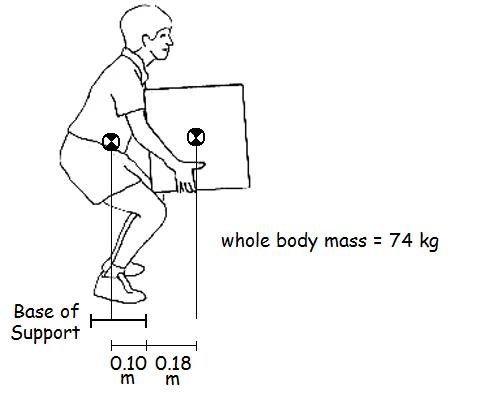
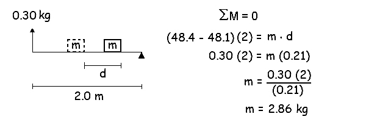

Anthropometry (Continued)

In order to maintain balance, the CofG must remain within the base of support. The worker shown here has assumed a posture in which his CofG is within the base of support. The box he is holding in his hands, however, is outside the base of support and as mass is added to the box, the CofG will move forward until it reaches his toes. Find how much mass can he held in the hands without losing balance.
Solution:
The easiest way to solve this problem is to consider the toes to be the tipping point. The whole body mass is 0.10m behind the tipping point and the mass of the box is 0.18m in front of the tipping point. If the sum of the moments about the tipping point is zero, we will have the maximum mass that can be added to the box.

The Reaction Change Method

There is a method that allows the whole body center of gravity to be determined of a living subject and even the segment masses. The method is called the "reaction change method" and requires a scale and a board upon which the subject can lie.
Knowing the length of the board and the whole body mass of the individual, we can calculate the location of the whole body CofG by using static equilibrium. If the length of the board is 2.0m and the subject weighs 75kg, we can use the scale reading and the sum of the moments about the fulcrum to determine the location of the CofG. Example: scale reading is 48.1 kg.

We can also use the reaction change method to determine the mass of a limb segment.

Suppose the subject was to move his arm a known distance (d). As the arm is moved closer to the scale, the scale reading will increase. Knowing the distance that the arm was moved, and the change in the scale reading, we can calculate how much mass was moved. If the length of the board is 2.0m and the scale reading changes from 48.1kg to 48.4kg, we can sum the moments about the fulcrum to determine how much mass was moved that distance. Example: d = 0.21m.
